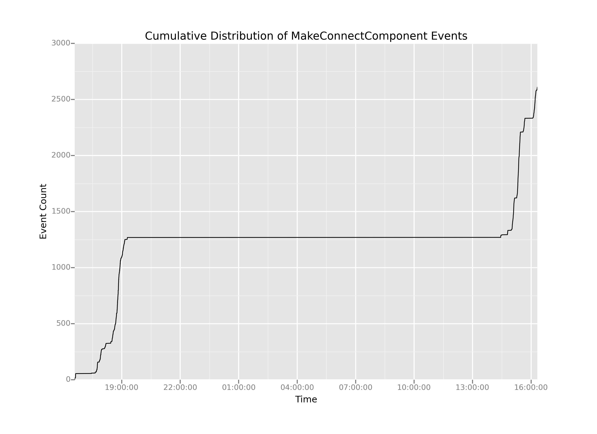

So, it seems like we have way too many MakeConnectComponent events. Earlier, I explained that we're averaging more than one MakeConnectComponent event per second. But what if we wanted to think about whether that average really describes a typical time slice of our data? In other words, we might want to know how our MakeConnectcomponent events are distributed over time.
One way to think about that distribution is to ask: when do our MakeConnectComponent events occur over time? Below, I'm going to use the ggplot package to look at the cumulative distribution of the connection events. The syntax may seem wonky and complicated at first, but it's actually an elegant implementation of ggplot2, itself an implementation of Leland Wilkinson's Grammar of Graphics. If at first you're stymied by it, don't worry. I'll try to help break it down for you.
First, we're doing some basic manipulation to get a cumulative sum column. This is actually so dumb I'm almost embarrased. I create a column by applying a lambda function to the timestamp column that always returns 1, then I just sum cumulatively over that column. Lastly, I apply another lambda function to format our timestamp (currently an integer) into a nicer-formatted timestamp.
I'll break these plotting lines down one major line at a time:
ggplot object, which is essentially the basic kind of object from whence all plots are constructed in ggplot. aes() just stands for aesthetic mapping, where I'm telling ggplot how to map data to graphical features. In this case, I'm saying "map the values in the timestamp1 column to the x position of this plot, and map the values of cumulativeCount to the y position. It may seem trivial now, but the power of aesthetic mappings like this is that I can also map quantities (or categories) to other graphical properties, for example mapping other columns in my dataframe to the aesthetic properties of color or shape. For now, we'll just stick with mapping quantities to cartesian x and y coordinates. When creating the ggplot object, I also tell it what dataframe I'm talking about, so the local names of timestamp1 and cumulativeCount make sense in scope.geom_point(), which would give us a bivariate scatterplot instead of a lineplot.ggtitle(), xlab(), and ylab() to set the text for the plot title and axis labels.print() call to make sure my plot shows up in my interactive session.ggsave() to save my plot directly to a file. ggsave() is smart and it detects the desired type of output file based on the suffix you pass in as a filename. In this case I'm using the .PNG format for images, but if I wanted an infinitely scalable image I could have used a .PDF extension.# Manipulating the data to get a cumulative sum
# and nicely formatted timestamps
connectionEvents = ms[ms.key == 'MakeConnectComponent']
connectionEvents['cumulativeCount'] = connectionEvents.timestamp.apply(lambda x: 1).cumsum()
connectionEvents['timestamp1'] = connectionEvents.timestamp.apply(lambda x: pd.Timestamp(x, unit='ms'))
# Creating the basic plot
p = ggplot(aes(x='timestamp1',
y='cumulativeCount'),
data=connectionEvents)
p = p + geom_line()
p = p + ggtitle('Cumulative Distribution of MakeConnectComponent Events')
p = p + xlab('Time')
p = p + ylab('Event Count')
# Showing the plot
print(p)
# Saving the plot
ggsave(plot=p,
filename='cumulativeDistributionOfMakeConnectComponent1.png')

This plot has a number of interesting features. Easily the most salient feature is the giant flat-line in the center. It looks like there were effectively no MakeConnectComponent events between between 2000 hrs on the first day and 1400 hrs on the second day. And that seems entirely reasonable: the game likely would have been shut off during the night, then fired up again for testing the next day.
The challenge is that on either side of the flatline the curves are quite steep. That means there could be a fair amount of information hiding in the areas of the plot where there was activity, but it's up to us to extract out that long, boring middle portion where nothing is happening. How can we do that?
Well, suppose what we wanted was to create two new plots, call them Day 1 and Day 2, that have just the interesting parts: the parts where the slope of the cumulative distribution is nonzero. (Note that when the slope is nonzero, that's when action is happening and we're registering events over time.) If we wanted two separate plots, all we have to is figure out when, exactly, that boring stretch of time starts and when, exactly, it ends. And, one way to do that would be if we could somehow generate the time that elapses between each successive event in our dataset. So, let's do it!